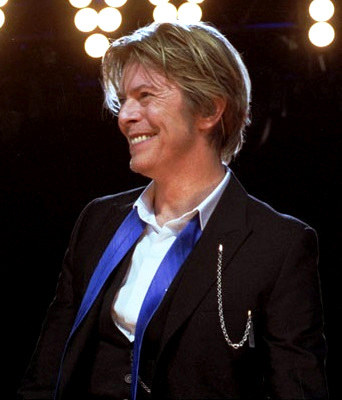

By David Bowie
This Is A Simple Webpage Created for CISC 3130 - Data Structure Class
David Bowie was born in South London's Brixton neighborhood on January 8, 1947. His first hit was the song "Space Oddity" in 1969. The original pop chameleon, Bowie became a fantastical sci-fi character for his breakout Ziggy Stardust album. He later co-wrote "Fame" with Carlos Alomar and John Lennon, which became his first American No. 1 single in 1975. An accomplished actor, Bowie starred in The Man Who Fell to Earth in 1976. He was inducted into the Rock and Roll Hall of Fame in 1996. Shortly after releasing his final album, Bowie died from cancer on January 10, 2016.

The lyrics describe Ziggy Stardust bringing a message of hope to Earth's youth through the radio, salvation by an alien 'Starman'. The story is told from the point of view of one of the youths who hears Ziggy. According to Bowie himself, speaking to William S. Burroughs for Rolling Stone magazine in 1973, Ziggy Stardust is not the Starman but merely his earthly messenger – contrary to received opinion which often paints Ziggy as an extraterrestrial. The song has inspired interpretations ranging from an allusion to the Second Coming of Christ, to an accurate prediction of the plot for the film Close Encounters of the Third Kind (1977). The music is in a gentle pop rock vein, featuring prominent acoustic guitar and a string arrangement by Mick Ronson, not dissimilar to the style of Bowie's previous album Hunky Dory (1971). The chorus is loosely based on Harold Arlen's "Over the Rainbow" from the film The Wizard of Oz, alluding to the "Starman"'s extraterrestrial origins (over the rainbow) (the octave leap on the word "Starman" is identical to that on the word "Somewhere" in "Over the Rainbow"). Other influences cited for the track are the T. Rex songs "Telegram Sam" and "Hot Love" (the "boogie" references and "la la la" chorus) and Holland–Dozier–Holland's "You Keep Me Hangin' On" (the morse code-esque guitar and piano breaks).
The "Starman" single remained in the UK charts for 11 weeks. The single initially sold steadily rather than spectacularly but earned many positive reviews, John Peel for example calling it "a classic, a gem". In the United States, the single peaked at number 65 on the Billboard Hot 100 in August 1972. The Top of the Pops performance was included on the DVD version of Best of Bowie in 2002. In addition to the TV performances, Bowie played the song for radio listeners on the BBC's Johnny Walker Lunchtime Show on 22 May 1972. This performance was broadcast in early June 1972 and eventually released on Bowie at the Beeb in 2000. In February 1999, Q magazine listed the single as one of the 100 greatest singles of all time, as voted by readers.
[Intro]
Hey now, now
Oh, oh, oh
[Verse 1]
Didn't know what time it was, the lights were low
I leaned back on my radio
Some cat was layin down some rock 'n' roll
"Lotta soul," he said
Then the loud sound did seem to fade
Came back like a slow voice on a wave of phase
That weren't no DJ, that was hazy cosmic jive
[Chorus]
There's a starman waiting in the sky
He'd like to come and meet us
But he thinks he'd blow our minds
There's a starman waiting in the sky
He's told us not to blow it
'Cause he knows it's all worthwhile
He told me
Let the children lose it
Let the children use it
Let all the children boogie
[Verse 2]
I had to phone someone so I picked on you
Hey, that's far out, so you heard him too
Switch on the TV, we may pick him up on channel two
Look out your window, I can see his light
If we can sparkle he may land tonight
Don't tell your poppa or he'll get us locked up in fright
[Chorus]
There's a starman waiting in the sky
He'd like to come and meet us
But he thinks he'd blow our minds
There's a starman waiting in the sky
He's told us not to blow it
'Cause he knows it's all worthwhile
He told me
Let the children lose it
Let the children use it
Let all the children boogie
[Chorus]
Starman waiting in the sky
He'd like to come and meet us
But he thinks he'd blow our minds
There's a starman waiting in the sky
He's told us not to blow it
'Cause he knows it's all worthwhile
He told me
Let the children lose it
Let the children use it
Let all the children boogie
[Outro]
La, la, la, la-la, la, la, la
La, la, la, la-la, la, la, la
La, la, la, la-la, la, la, la
La, la, la, la-la, la, la, la
La, la, la, la-la, la, la, la
La, la, la, la-la, la, la, la
La, la, la, la-la, la, la, la
La, la, la, la-la, la, la, la
Word Frequencies Of The Lyrics
--------------------------------
for my code i used TreeMap data structue. TreeMap is a Red-Black tree based NavigableMap implementation. Unlike LinkedHashMap and HashMap this data structure does not use hashing for storing keys. i chosed this perticular data structure mainly because it is simple and it also print output in alphabetical order which looks nice then random word list. HashMap has no ordering when you iterate through it; TreeMap iterates in the natural key order. also in my code i used a for loop and if-else statement.
If i had more time i would use that to improve this webpage more. i would make it more user friendly. and i would use more css & javascript to customize it more. i would add more graphic in it. make the webpage more graphicaly designed webpage then just a html based webpage.
I find this project very helpful and usefull to learn some new thins. although because of time constraint i coudn't try some new things like css & javascript. but i would love to continue in this even after the course is over. and love to use more css & javascript to make it more user friendly.
-----------------------
This Webpage Created By
Rafsan Ahmed
CISC 3130 - Data Structure
Section MY9
Fall 2019
Created At 12/11/2019
Github Account Link